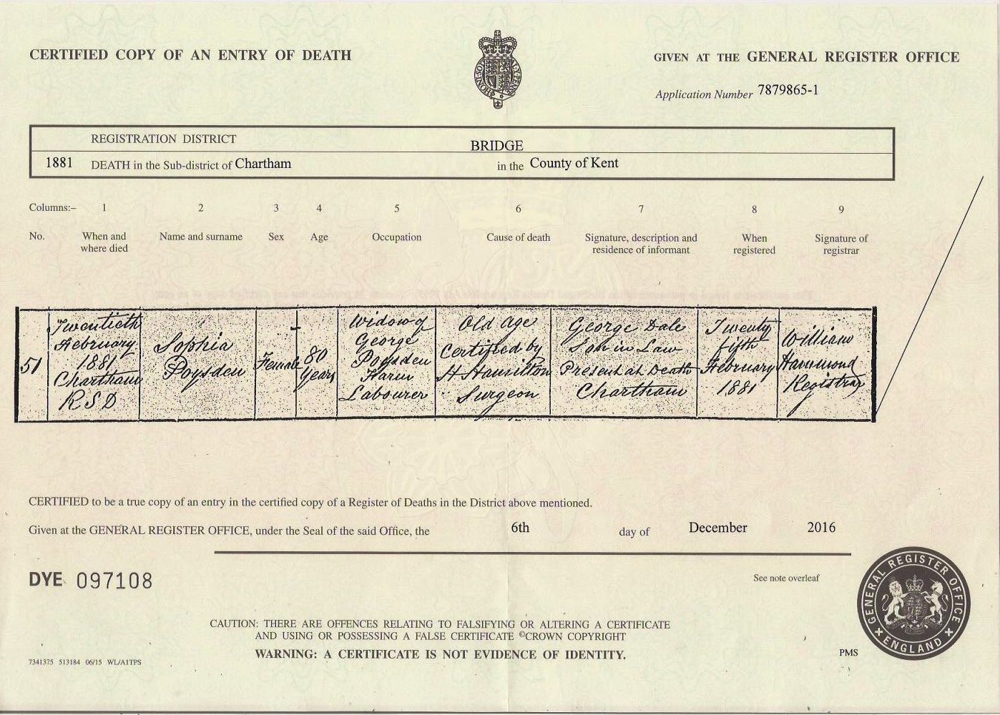

Sophia Poysden (née Chapple) 1801 - 1881
[ Home ] | [ Calendar ] | [ Surnames Index ] | [ Family History ]Sophia Chapple, the 3 times great-grandmother of <a href="I1.html">Nigel Horne</a>, was born in Blean, Kent, England in 1801<span class="citation">1,2,3,4,5,6,7</span> and married George Poysden (an agricultural laborer with whom she had 3 children: <a href="I57.html">Esther</a>, <a href="I169.html">Mary</a> and <a href="I172.html">Mary</a>) at Ss Cosmus & Damian in Blean on Dec 27, 1824<span class="citation">8</span>.</p><p>Sophia spent all of her life in Kent, England. Throughout her life, she lived in several places around the county: in Harbledown, Kent, England in 1841<span class="citation">1</span>; in Chartham Hatch on Mar 30, 1851<span class="citation">10</span>; in Chartham in 1861<span class="citation">3</span>; and in Chartham Hatch on Apr 2, 1871<span class="citation">11</span> following the death of her husband on Jan 23, 1865. <p>She died on Feb 20, 1881 in Chartham, Kent<span class="citation">6</span> (old age. <a href="http://www.freebmd.org.uk/cgi/information.pl?r=65303649&d=bmd_1199344780">www.freebmd.org.uk</a>) and was buried there at St Mary's Church on Feb 26, 1881<span class="citation">9</span>.
Children
- Esther was born in 1825
- Mary was born in 1825
- Mary was born c. 1828
Citations
- 1841 England Census Online publication - Provo, UT, USA: The Generations Network, Inc., 2006.Original data - Census Returns of England and Wales, 1841. Kew, Surrey, England: The National Archives of the UK (TNA): Public Record Office (PRO), 1841. Data imaged from the National
- 1851 England Census Online publication - Provo, UT, USA: The Generations Network, Inc., 2005.Original data - Census Returns of England and Wales, 1851. Kew, Surrey, England: The National Archives of the UK (TNA): Public Record Office (PRO), 1851. Data imaged from the National
- 1861 England Census Online publication - Provo, UT, USA: The Generations Network, Inc., 2005.Original data - Census Returns of England and Wales, 1861. Kew, Surrey, England: The National Archives of the UK (TNA): Public Record Office (PRO), 1861. Data imaged from the National
- 1871 England Census Online publication - Provo, UT, USA: The Generations Network, Inc., 2004.Original data - Census Returns of England and Wales, 1871. Kew, Surrey, England: The National Archives of the UK (TNA): Public Record Office (PRO), 1871. Data imaged from the National
- England & Wales deaths 1837-2007 - Findmypast
- England & Wales, FreeBMD Death Index: 1837-1915 Online publication - Provo, UT, USA: The Generations Network, Inc., 2006.Original data - General Register Office. England and Wales Civil Registration Indexes. London, England: General Register Office. © Crown copyright. Published by permission of the Cont
- Kent, Canterbury Archdeaconry burials 1538-1988 - Findmypast
- England Marriages 1538-1973 - Findmypast
- England Deaths & Burials 1538-1991 - Findmypast
- 1851 England, Wales & Scotland Census - Findmypast (was age 51 and the wife of the head of the household)
- 1871 England, Wales & Scotland Census - Findmypast (was age 70 and the head of the household)
Media
Sophia Chapple - death certificate

Kent, Canterbury Archdeaconry burials 1538-1988 - GBPRS/CANT/D/95595929
England & Wales deaths 1837-2007 - BMD/D/1881/1/AZ/000294/283
England Marriages 1538-1973 - R_848139419/2
Kent, Canterbury Archdeaconry marriages - GBPRS/CANT/M/97123249/2
1871 England, Wales & Scotland Census - GBC/1871/0014163102
1851 England, Wales & Scotland Census - GBC/1851/0005785499
England Deaths & Burials 1538-1991 - R_277189000
Family Tree

Generated by Ged2Site. Last updated on Jul 20, 2025